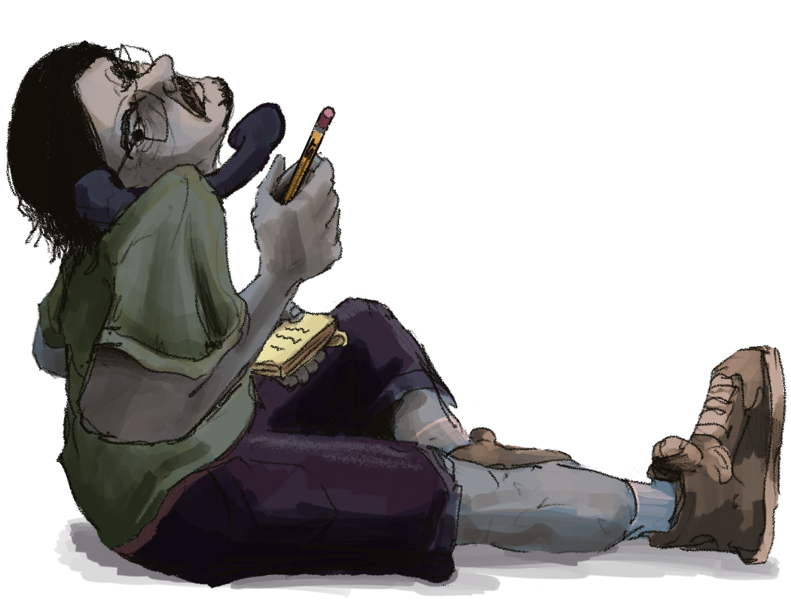

Seth Tobeck’s CV
seth.tobeck@sjsu.edu EDUCATION 2027 San Jose State University, BA, Art Studio Practice 2024 Las Positas Community College, Livermore, AA, Arts and Humanities GROUP EXHIBITIONS 2026 - Who We Are, King Library, San Jose, CA. SKILLS Mediums Acrylic Painting Bleach Painting Digital Art Film Pen & Ink Pencil Photography Sculpture Tattooing TECHINCAL PROCESSES Adobe Photoshop Ceramics Film Developing Woodcarving